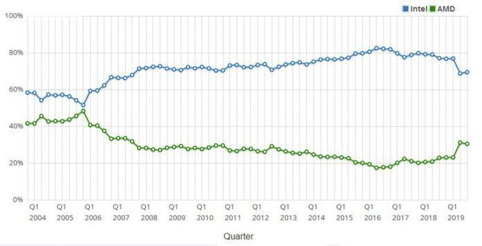
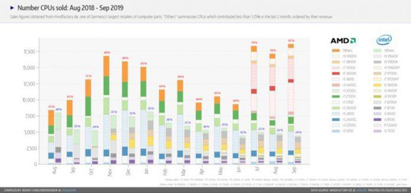

Vài năm trở lại đây, dòng CPU Ryzen của AMD đã được cộng đồng công nghệ đón nhận một cách nồng nhiệt bởi vì hiệu năng cao, nhưng giá thành sản phẩm lại rẻ hơn rất nhiều so với mặt bằng chung. Cũng từ đó doanh số của các thế hệ Ryzen cũng ngày một tăng lên, đồng nghĩa với việc số lượng CPU của Intel bán ra sẽ giảm mạnh.

Sự chiếm lĩnh thị phần CPU trên toàn cầu trong 15 năm qua của AMD và Intel. Ảnh: internet
Theo như những gì mà trang CPUBenchmark công bố thì vào Q3/2019, AMD đã chính thức có được 30% thị phần. Nhìn thì có vẻ như con số này không nhiều nhưng thật ra nó rất lớn, bởi vì nó biểu thị cho việc AMD đã tăng trưởng tới 70% từ năm 2017 chỉ bằng vào thế hệ CPU Ryzen như Ryzen, Ryzen Pro, Ryzen Threadripper và EPYC.
Mặc dù sự trở lại lần này của AMD vô cùng mạnh mẽ nhưng nếu nhìn lại về quá khứ, chúng ta có thể thấy còn rất lâu hãng mới có thể trở lại thời kì phát triển mạnh nhất. Đó là Q1/2006, ngay khi ra mắt thì dòng CPU Althlon 64 đã chiếm tới 50% thị phần, đủ sức để ngang bằng với Intel.
Nhưng ngay khi Intel ra mắt Core 2 Duo thì mọi chuyện đã thay đổi, không có bất kì một CPU nào có thể sánh ngang với nó, đây cũng là lúc mà Intel nắm trong tay hầu hết thị phần CPU.
Intel liệu có thể đáp trả lại?
Đầu tiên chúng ta cần thấy rằng mọi thông tin hay dữ liệu mà CPUBenchmark đưa ra đều có độ chính xác rất cao. Bởi vì mọi thông tin trên trang này đều dựa trên số lượng CPU đang được sử dụng, chứ không phải dựa theo số lượng sản phẩm bán ra. Khi người dùng sử dụng phần mềm benchmark Passmark Software thì trang này sẽ thống kê lại toàn bộ.

Số lượng CPU bán ra của các hãng. Ảnh: internet
Nếu đối chiếu giữa mọi số liệu do CPUBenchmark đưa ra và công bố doanh số bán ra của các hãng thì chúng ta sẽ thấy sự chính xác giữa 2 bên. Các mẫu CPU Ryzen 7 và Ryzen 9 của AMD có số lượng bán ra cực kì lớn ở 2 thị trường Châu Âu và Bắc Mỹ. Hay chỉ tính riêng ở Đức, AMD cũng đã nắm lấy hầu hết toàn bộ thị phần.